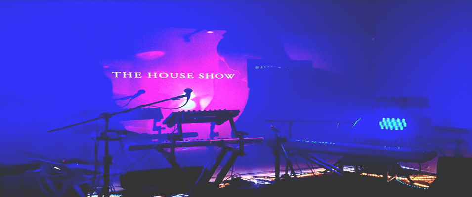

Tunde Olaniran is more than just a brown boy. In his popular single he raps, “I’m every single thing you think of me/I’m a sinner, killer, drug dealer, refugee.” You can add amazing and fierce to that list as well. Hailing from Flint Michigan, he is a powerhouse making a name for himself through his unique music and conscious lyrics laid over trap and electronic beats that he produces himself...[read more]
IN THIS ISSUE:
Sylvan Esso is the love child of the folk meets electronic duo Nicholas Sanborn and Amelia Randall Meath. The two met over music and a dance floor, and what was supposed be a musical one night stand became a match made in heaven. Sanborn formerly of Megafaun, remixed “Play it Right,” Meath’s song with her former band Mountain Man. With Meath’s breathy vocals...[read more]
With roots in techno and the birth of Motown, music is in Detroit’s bones. The same goes for Rachelle and Nick of Little Animal, a new duo, combining those roots and making it their own with a hint of electronic, indie and R&B. Front woman Rachelle is meek and charming, yet feisty and big when it comes to her vocals and stage...[read more]
Phox may be from a small town in Wisconsin, but they are making big waves in music. They just released their self-titled debut album after the success and accolades of their EP “Confetti” was released in 2013. This six piece band began with a group of childhood friends who enjoyed making music together, and evolved...[read more]
Bliss and Alice snuck into our ears and made quite a bang with his first mixtape Poetry Volume One. If you don’t know who this Milwaukee emcee is, you should, because you are missing out on one of the rising stars of hip hop. His effort is masterful, coming from a rookie, who is spitting veteran lyrics over violins and horns, taking influences...[read more]
Listening to the Filipino songstress and harpist Low Leaf out of Los Angeles is like having a spiritual experience. It’s not often that the harp, hip hop, soul and electronic fall into the same category. Low Leaf, who writes, mixes, produces and plays a number of instruments is able to meld together many different sounds and influences...[read more]
Hip-hop artist Supaman is a prime example that you don’t have to compromise who you are in order to make meaningful music for the masses. Supaman on the mic, and Christian Parrish Takes the Gun in his everyday life, he was born and raised on an Indian reservation in Montana, and has used his Native heritage as the backbone...[read more]
Whatever you do, you can’t funk with THEESatisfaction’s groove. The Seattle-based rapper Stasia "Stas" Irons and singer Catherine "Cat" Harris-White met back in college before they became queens and released their debut album AwE NaturalE back in 2012They found their claim to fame when they collaborated with Shabazz Place’s...[read more]
IN REVIEWS:  The House Show is a musical experience unlike any other. It'is like a house party with sophisticated music performances, free food and flowing drinks. This wasn’t like your average high school house party where your friend’s garage band was the entertainment for the evening. This was much much more. I felt right at home. There was chili, flowing drinks, and conversation...[read more]
When it comes to St. Patrick’s Day weekend, the city of Chicago is like a drunken apocalypse. And, the one neighborhood where all the drunken revelers congregate is of course, Wrigleyville, where Of Montreal performed at Metro to a sold out crowd at Metro on this bacchanalian holidayI found myself walking into the Metro doors on that...[read more]
Nick Sanborn and Amelia Meath, the duo that makes up the electro folk duo, Sylvan Esso, have a certain cosmic connection, and there was something magical about their performance at Metro Chicago this Saturday. Categorizing them to simply electro-folk, is an understatement. Throw in a little pop, hip-hop sprinkled with a lil R&B...[read more]
There is something captivating about the UK songstress FKA Twigs. Perhaps it is the quiet seductive charm that she exudes, the way she makes love to the mic with her breathy vocals, her artistic take on the modern sounds of R&B, or all of the above. With all that being said and true, she had the crowd at Metro Chicago completely under...[read more]